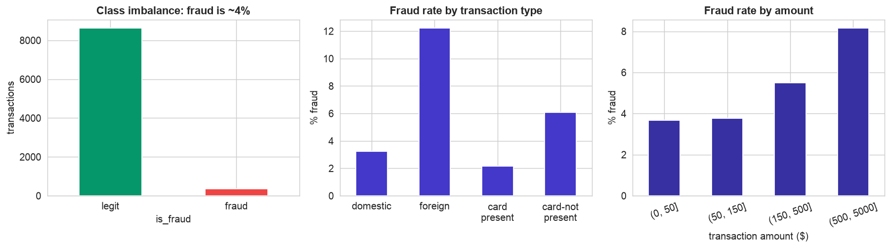
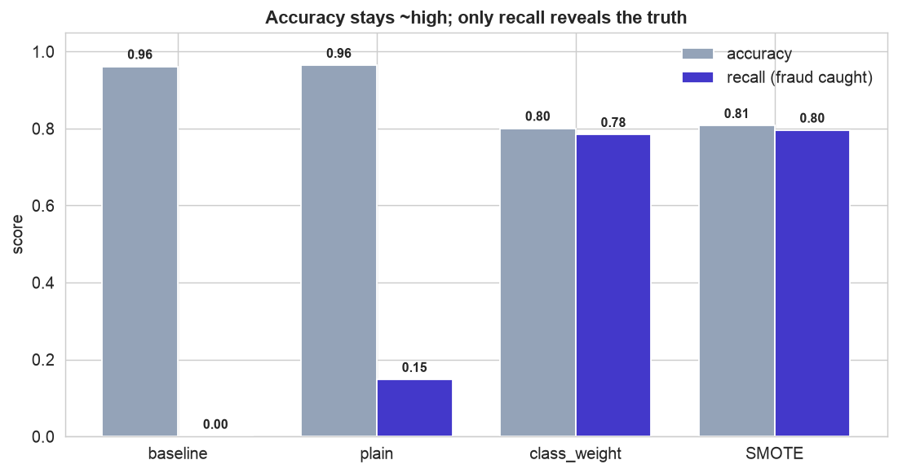
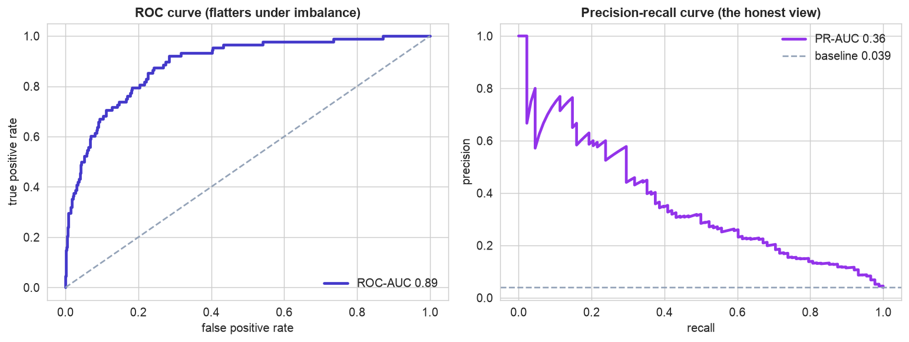
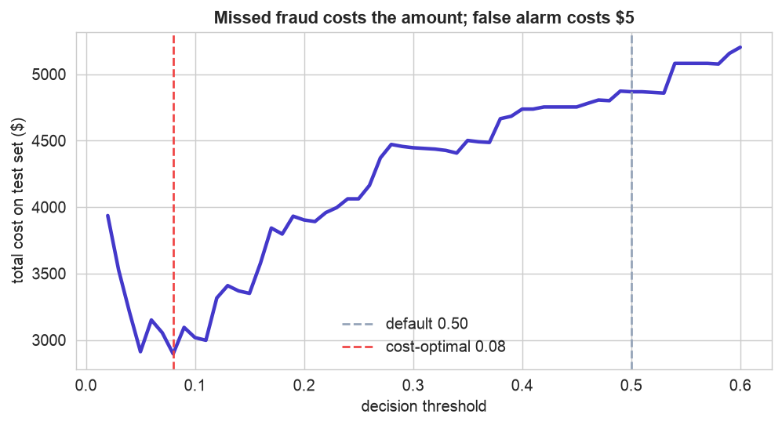
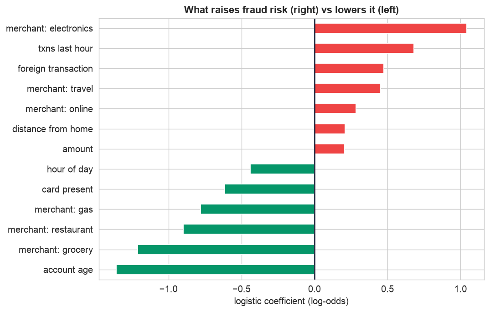

Chapter 120 had a near-balanced target. Real fraud is nothing like that: the positive class is rare, and that single fact rewrites the whole project. The naive instincts, maximize accuracy, use a 0.5 threshold, trust the ROC curve, all quietly fail. Getting fraud detection right is a masterclass in the tools for imbalanced classification.
The 12-step method still runs, but three steps change character: metrics (accuracy is out, precision/recall/PR-AUC are in), modeling (rebalance so the model cares about the rare class), and the threshold (tuned to the cost of a missed fraud versus a false alarm).
The 12-Step Method
The same repeatable loop, now aimed at a rare target. The companion notebook runs all twelve steps; the sections below tell the story and show the plots.
One row per card transaction with amount, hour,
txns_last_hour, merchant_category, foreign_transaction,
card_present, account_age_days, distance_from_home_km, and the target
is_fraud, of which only about 4% are 1.
Define, Collect, Inspect, Clean (Steps 1–4)
Define the objective
Flag fraudulent transactions in real time. The two errors are wildly unequal: a missed fraud can cost the full transaction plus chargebacks and lost trust, while a false alarm costs a few minutes of review or a declined-card annoyance. That cost asymmetry, on top of the data imbalance, shapes every choice.
Collect the data
A transaction log exported to CSV, one row per card swipe or online payment. The same readers would pull it from a streaming warehouse in production.
Inspect the data
The first thing value_counts() reveals is the defining fact: only ~4% of transactions are
fraud. That rarity means accuracy will be useless, the model will be tempted to ignore fraud entirely, and
there are few fraud examples to learn from. There is also routine mess, duplicates, negative amounts, mixed-case
merchant labels.
Clean the data
| Problem | Detail | Fix |
|---|---|---|
| Duplicates | 30 repeated transaction_id | deduplicate |
| Impossible values | 12 negative amount | drop those rows |
| Messy categories | merchant labels in mixed case (Online, ONLINE) | standardize to lower-case |
| Missing values | 40 distance_from_home_km | impute in the pipeline (train only) |
After cleaning, 8,988 transactions remain, still about 4% fraud. Cleaning does not, and should not, touch the imbalance, which is the real subject of the chapter.
Visualize, Transform, Split (Steps 5–7)
Visualize where fraud hides
Fraud is rare but not random, it has a fingerprint. It is several times more common on foreign and card-not-present transactions, and it rises steeply with the transaction amount (and, in the notebook, with late-night hours, high velocity, and distance from home).

The rare class has a fingerprint. Left, the imbalance itself, the fraud bar is a sliver next to legitimate transactions. Center, fraud rate by type: foreign and card-not-present transactions are several times riskier than domestic, card-present ones. Right, fraud rate climbs steeply with amount. This structure is what lets a model separate fraud from noise even though examples are scarce.
Transform, inside a pipeline
Numeric columns are median-imputed and standardized, the merchant category is one-hot encoded, all inside a
Pipeline so the preprocessing is fit on training data only. The same anti-leakage discipline as
Chapter 120.
Split, stratified
Hold out 25% as a test set, but with stratify=y. With only 4% fraud, an ordinary random split could
hand the test set far too few fraud cases (or too many) by luck; stratifying forces both train (264 frauds) and
test (88 frauds) to keep the true 4% rate, so the evaluation is stable.
The Accuracy Trap, and Escaping It (Steps 8–9)
Build a baseline, and watch accuracy lie
A model that predicts "legitimate" for every transaction scores 96% accuracy, and catches zero fraud. Even a normally-trained logistic regression inherits the bias: 96% accurate, but it misses about 85% of fraud (recall ~0.15). On rare-event data, accuracy is not just unhelpful, it is actively misleading.
Rebalance, and use the right metrics
Two easy fixes make the model care about the rare class. class_weight='balanced' penalizes a missed
fraud far more heavily; SMOTE grows synthetic fraud examples inside the training fold until the
classes are even. Both lift recall from ~0.15 to ~0.80, catching four of five frauds.

Accuracy hides the story; recall tells it. Accuracy (grey) barely moves, it is ~0.96 for the do-nothing baseline and the plain model, then drops to ~0.80 once we rebalance. Recall (indigo) is the real signal: 0% caught for the baseline, a dismal 15% for the plain model, then a transformative ~80% with class weights or SMOTE. We happily trade meaningless accuracy for fraud actually caught.
Which metric should you optimize? For rare events, the precision-recall curve is the honest view, while the ROC curve can look flattering because the huge legitimate class shrinks the false-positive rate.

Two ranking views. Left, the ROC curve looks strong (AUC 0.89), the model ranks fraud above legitimate far better than chance, but ROC is over-optimistic under heavy imbalance. Right, the precision-recall curve is the honest picture: its baseline is the 4% fraud rate (dashed line), and a PR-AUC of 0.36 is many times that, real signal, while making the precision-recall trade-off explicit. This is the curve you pick an operating point on.
Threshold, Interpret, Deploy (Steps 10–11)
Tune the threshold to cost
The model outputs a probability; the threshold turns it into an alert. Because a missed fraud costs the whole transaction while a false alarm costs a few dollars of review, the default 0.5 is far too conservative.

The cost-optimal cutoff is far below 0.5. Each point is the total cost on the test set at that threshold, counting a missed fraud as the transaction amount and a false alarm as $5. The curve bottoms out around 0.08, not 0.5. Moving the cutoff there lifts recall from 0.15 to about 0.67, catching four times as much fraud, at the price of more false alarms the review team can absorb. This threshold, not the algorithm, is the real business dial.
Because the winning model is a logistic regression, its coefficients read as risk drivers.

What raises fraud risk. Bars to the right (red) increase the odds of fraud, foreign and card-not-present transactions, high velocity (many transactions per hour), electronics/travel merchants, large amounts, and distance from home. Bars to the left (green) mark safe transactions, older accounts and everyday merchants like groceries. Every driver matches how real fraud behaves, a sign the model learned genuine patterns.
Deploy the model
In production the pipeline scores each transaction in milliseconds; anything above the cost-tuned threshold is held and routed to a review queue. Fraud patterns shift constantly, so the essentials are drift monitoring, a feedback loop that feeds confirmed frauds back into retraining, and human analysts on the borderline alerts. Operationalizing exactly this kind of model is the subject of Chapter 126.
Communicate: the Plain-English Write-Up (Step 12)
For a non-technical reader
What is this? We built a tool that scores each card transaction for how likely it is to be fraudulent, so the bank can automatically hold the riskiest ones for a quick review before money moves.
What goes in, and what comes out
Inputs: details the bank already has at the moment of purchase, the amount, the time, how many recent transactions the card has made, the merchant type, whether it is foreign, whether the physical card was present, how old the account is, and how far from home it happened. Output: a fraud probability from 0 to 1, which becomes an "approve / hold" decision once compared to a cutoff.
The decisions we made, and why
- ✓We did not use accuracy to judge the tool. Because only 1 in 25 transactions is fraud, a tool that approves everything is 96% "accurate" while catching no fraud at all, a useless model that looks great on paper. We measured what fraction of real fraud we catch instead.
- ✓We taught the model to take fraud seriously by telling it a missed fraud is far more costly than a false alarm (and by showing it extra synthetic examples of fraud). This raised the share of fraud caught from about 15% to about 80%.
- ✓We chose the alert cutoff by cost, not by a default. Since a missed fraud can cost hundreds of dollars and a false alarm costs a few, we set the bar low, flag more, review more, and catch far more fraud.
How good is it, in plain terms
Tuned to cost, the tool catches roughly two-thirds of all fraud while holding only a small slice of transactions for review, a dial the bank can turn tighter or looser depending on how many alerts its team can handle. It is not perfect (no fraud model is), but it turns an impossible manual task into a focused, high-value review queue.
What actually flags a fraud
The riskiest transactions are large, foreign, made without the physical card, on newer accounts, far from home, and in bursts, exactly the profile of a stolen card being tested and drained. Everyday local purchases on established accounts almost never trip the alert. The upshot: on rare-event problems, choosing the right yardstick and the right cutoff matters more than the choice of algorithm.
Run the entire project in Python
The companion notebook is the full 12-step pipeline: it loads and cleans the transaction log, visualizes the imbalance and the fraud fingerprint, builds a leakage-free pipeline, exposes the accuracy trap against a baseline, rebalances with class_weight and SMOTE, draws the ROC and precision-recall curves, tunes the decision threshold to cost, interprets the risk drivers, and sketches deployment, with every table and chart explained.
View opens the rendered notebook instantly.
Open in Colab runs it live. To run locally, install numpy, pandas,
matplotlib, seaborn, scikit-learn, and imbalanced-learn.
🎓 Key Takeaways
- ✓Accuracy is a trap on rare-event data: a do-nothing model was 96% accurate and caught zero fraud.
- ✓Judge by precision, recall, and PR-AUC, and stratify the split so both sets keep the rare rate.
- ✓Rebalance the learning with
class_weight='balanced'or SMOTE (inside an imblearn pipeline) to lift recall from ~0.15 to ~0.80. - ✓Prefer the precision-recall curve for rare events; ROC can flatter because the majority class dwarfs the false-positive rate.
- ✓Tune the threshold to cost: with a missed fraud far dearer than a false alarm, the optimal cutoff sits far below 0.5.
Take It Further
Five ways to extend the project in the notebook:
A tree-ensemble rival
Fit a random forest and compare it to logistic regression on PR-AUC, does capturing interactions help?
average_precision_score, not accuracy.An operating point under budget
If the team can review only K alerts a day, rank by risk and see what recall that buys.
A resampling shootout
Compare class weights, SMOTE, and undersampling on PR-AUC. Do they really differ?
Let cost move the line
Sweep the cost of a false alarm and watch the cost-optimal threshold shift.
Score a live transaction
Build one risky and one ordinary transaction and read the model's fraud probability for each.
model.predict_proba(one_row).All five, worked in a companion notebook
A second notebook, Take It Further, rebuilds the Chapter 121 model and works every one of these five extensions with visuals and explanations, a random-forest rival, an operating point under a review budget, a resampling shootout, how the cost ratio moves the threshold, and scoring a live transaction, closing with a plain-English summary.
Quiz: Test Yourself
Eight questions on imbalanced classification and fraud detection. Answer them, hit Check Answers, and keep refining until you score 100%. Your progress is saved, so you can hop back to the chapter and return anytime.
Fraud was a rare-but-costly event. The next case study is another one, but earlier in time. Chapter 126 · Predictive Maintenance predicts machine failure before it happens from sensor data, where a missed breakdown is far costlier than an unnecessary inspection.